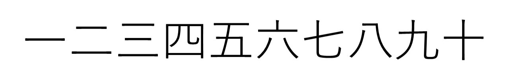
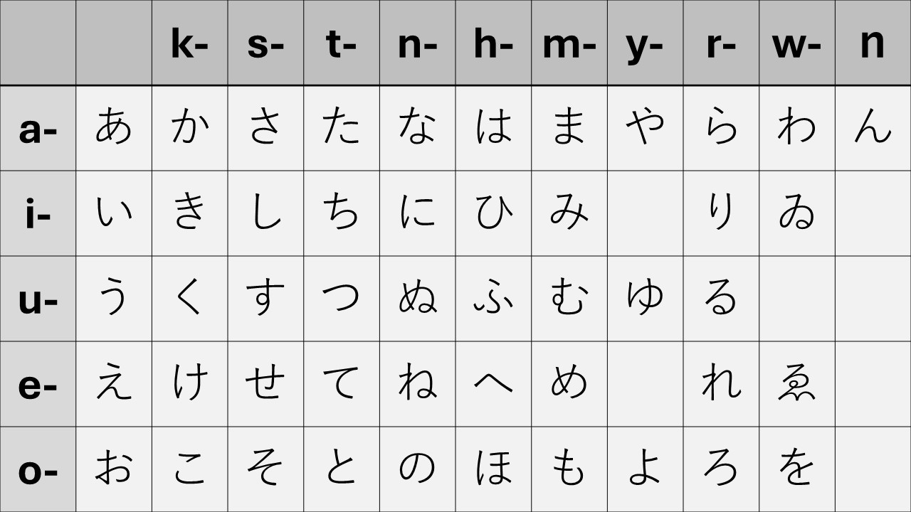
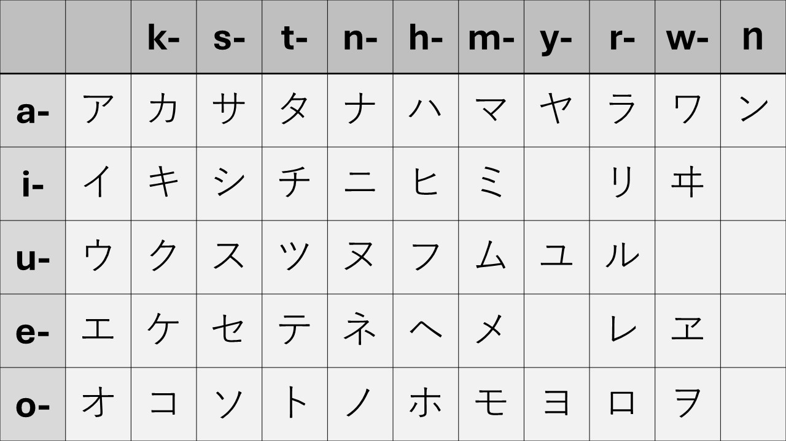
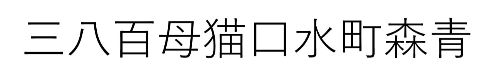
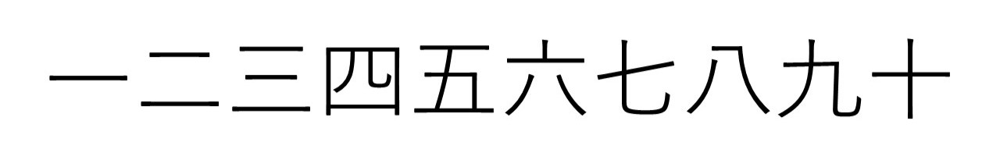

Hast du gewusst? - Zahlen
Im Japanischen gibt es für die Zahlen 1 - 10, 100 und 1'000 ein Zeichen. Bei den zehner Stellen wird zehn mal eine Zahl gerechnet. Bei den hunderterstellen wird hundert mal eine Zahl gerechnet.
Im Japanischen gibt es drei Schriften. Darunter Hiragana, das für Partikel und grammatikalische Formen verwendet wird. Auch die Furigana, die klein neben den Kanji stehen werden mit Hiragana geschrieben.
Die zweite Schrift wäre Katakana, das für ausländische Fremdwörter und Namen verwendet wird. Sie wurde von den Geistlichen in Japan geschaffen, weil sie die kanji, als zu kompliziert empfanden.
Zu guter Letzt wären, da noch die kanji. Es gibt rund 6'000 Kanji. Die Kanji stammen aus China und wurden vor etwa 1'500 Jahren nach Japan gebracht, da in Japan ein eigenes Schriftsystem fehlte.
Im Japanischen gibt es für die Zahlen 1 - 10, 100 und 1'000 ein Zeichen. Bei den zehner Stellen wird zehn mal eine Zahl gerechnet. Bei den hunderterstellen wird hundert mal eine Zahl gerechnet.
